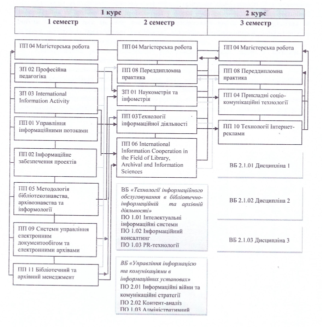

Рівень вищої освіти: магістр
Галузь знань: В Культура, мистецтво та гуманітарні науки
Спеціальність: В 13 Бібліотечна, інформаційна та архівна справа
Виконав: студент групи КН-25-1 Блискун М. М.
Підготовка висококваліфікованих професіоналів з інформаційної, бібліотечної та архівної справи, які володіють необхідними знаннями інноваційного характеру, уміють застосовувати навички організаційно-управлінської діяльності та використання інформаційних ресурсів, продуктів та послуг.
| Код | Компоненти освітньо-професійної програми | Кількість кредитів | Форма підсумкового контролю |
|---|---|---|---|
| Обов'язкова частина | |||
| Цикл 1. Дисципліни загальної підготовки | 9 | ||
| ЗП01 | Наукометрія та інфометрія | 3 | Залік |
| ЗП02 | Професійна педагогіка | 3 | Залік |
| ЗП03 | International Information Activity | 3 | Залік |
| Цикл 2. Дисципліни професійної підготовки | 57 | ||
| ПП01 | Управління інформаційними потоками | 4 | Екзамен |
| ПП02 | Інформаційне забезпечення проєктів | 4 | Залік |
| ПП03 | Технології інформаційної діяльності | 3 | Екзамен |
| ПП04 | Магістерська робота | 12 | Екзамен |
| ПП05 | Методологія бібліотекознавства, архівознавства та інформології | 5 | Екзамен |
| ПП06 | International Information Cooperation in the Field of Library, Archival and Information Sciences | 4 | Екзамен, курсова робота |
| ПП07 | Переддипломна практика | 9 | Залік |
| ПП08 | Прикладні соціокомунікаційні технології | 3 | Залік |
| ПП09 | Системи управління електронним документообігом та електронними архівами | 5 | Екзамен, курсова робота |
| ПП10 | Технології Інтернет-реклами | 3 | Екзамен |
| ПП11 | Бібліотечний та архівний менеджмент | 5 | Екзамен |
| Загальний обсяг обов'язкових компонентів: | 66 | ||
| Вибіркова частина | |||
| Цикл 1. Дисципліни із кафедрального/інституцького каталогу | 15 | ||
| ПО 1.01 | Інтелектуальні інформаційні системи | 5 | Залік |
| ПО 1.02 | Інформаційний консалтинг | 5 | Залік |
| ПО 1.03 | PR-технології | 5 | Залік |
| ПО 2.01 | Інформаційні війни та комунікаційні стратегії | 5 | Залік |
| ПО 2.02 | Контент-аналіз | 5 | Залік |
| ПО 2.03 | Адміністративний менеджмент | 5 | Залік |
| Цикл 2. Дисципліни із загального університетського каталогу | 9 | ||
| ВБ 2.1.01 | Дисципліна вільного вибору студента 1 | 3 | Залік |
| ВБ 2.1.02 | Дисципліна вільного вибору студента 1 | 3 | Залік |
| ВБ 2.1.03 | Дисципліна вільного вибору студента 1 | 3 | Залік |
| Загальний обсяг вибіркових компонентів: | 24 | ||
| ЗАГАЛЬНИЙ ОБСЯГ ОСВІТНЬОЇ ПРОГРАМИ: | 90 | ||
